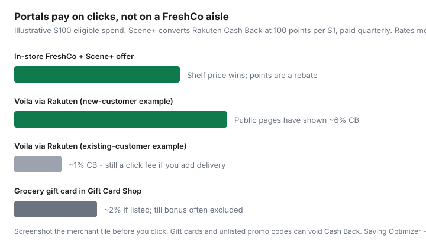

Food & Groceries · Canada
Using Rakuten and Scene+ portals for grocery-adjacent savings in Canada
Canadians treat Rakuten.ca like a U.S. Honey clone and Scene+ like a movie card, then miss the one stack that is actually Canadian: linked accounts, Cash Back converted to Scene+ points, quarterly. The other mistake is the opposite — trying to “portal” a No Frills run that never leaves the aisle, or clicking twice and voiding the credit.
This is grocery-adjacent savings: Voilà, meal-kit merchants, and official grocery gift cards. It is not a way to earn 6% walking the FreshCo cooler. Cheaper shelves still beat richer points. Pay in full. Interest is not a stack.
Disclosure: Rakuten.ca, Scene+ credit cards, and meal-kit merchants reached through portals are offer types. Saving Optimizer may earn a commission if we later add partner links. We do not currently claim Rakuten, Scene+, Scotiabank, or grocer partnerships. Rates and merchant tiles change without notice — screenshot before you click.
Key takeaways
- Link Rakuten.ca and Scene+, choose Scene+ as the payout, start every eligible click on Rakuten.ca.
- Conversion is 100 Scene+ points per $1 Cash Back, deposited quarterly — that is 1¢ a point if you redeem for groceries.
- Scene+ members may see up to 20% more Cash Back on some tiles versus regular Rakuten members. Believe the live tile.
- Gift-card shop vs clicking Voilà or a meal kit are different jobs. Do not double-count.
- Do not force a portal onto an in-store discounter trip. That is how stacks break.
Portal cashback basics for Canadians
A cashback portal pays you a cut of the merchant’s affiliate fee when tracking is on. Canadian practice: create a Rakuten.ca account, click Shop Now, wait for the tracking confirmation, then check out on the retailer site. Ad blockers, hopping through a second coupon tab, or typing the URL yourself can zero the credit.
Rakuten.ca is not US Rakuten. Gift Card Shop inventory, merchant lists, and Scene+ linkage are the Canadian product. Other Canadian portals exist; the rules are the same — screenshot rate, merchant, exclusions. The Gift Card Shop version of this hobby is unpacked in grocery gift cards with cashback.
Scene+ Rakuten overlap opportunities
Scene+’s own help article on shopping with Rakuten (public copy reviewed 20 Sep 2026) describes the loop:
- Connect Rakuten.ca and Scene+ once.
- Select Scene+ points as the reward option in Rakuten settings.
- Start at Rakuten.ca, click through, complete the order with tracking on.
- Cash Back posts to Rakuten when the merchant confirms, then converts to Scene+ at $0.01 Cash Back = 1 Scene+ point (100 points per $1) and lands in Scene+ every three months.
Scene+ marketing also describes up to 20% more Cash Back for linked members versus other Rakuten shoppers on select merchants, plus weekly emails. That is a tile-by-tile fact, not a permanent 20% on milk.
Once points arrive, grocery redemption at Empire banners is still 1,000 points = $10 — see Scene+ for free groceries. You cannot redeem Scene+ while you are mid-checkout through the portal, per Scene+ help. Plan the redeem for a later Sobeys-family or Voilà order.

Grocery gift cards vs online grocery merchants
| Click | What you buy | Watch-outs |
|---|---|---|
| Merchant (Voilà, Goodfood, etc.) | An actual grocery or kit order | Delivery fees; new vs existing Cash Back; gift cards and unlisted promo codes can void CB |
| Gift Card Shop | Loblaws / Superstore / other listed plastic or e-gift | Card bonus categories often exclude GCs; loyalty may not earn on the purchase of the card |
Rakuten.ca’s Voilà tile has advertised about 6% Cash Back for new customers and 1% for existing when reviewed 20 Sep 2026 — perishable. A 1% portal rebate on a $90 cart does not beat a $8 delivery fee you would not otherwise pay. Pickup or a store you already visit still wins most weeks.
Tracking pending cashback timelines
Treat pending Cash Back like a statement credit you do not have. Note the order number, date, and advertised rate. If it stays pending past the window on the tile, use Rakuten’s missing-Cash-Back path once with a receipt. Scene+ conversion is quarterly — do not plan this month’s grocery redeem on points that arrive in December.
One spreadsheet column is enough. Five shopping apps and a vibe is how credits disappear.
Stacking with credit cards safely
The clean stack is: portal click → pay with a card that actually earns on that MCC → Scene+ or PC at the grocer when the food is bought → pay the card in full.
Ugly stacks: carrying a balance to “earn 6%”; buying a gift card on a grocery-bonus card that excludes gift cards; applying an off-portal promo code that voids Cash Back; counting Gold Amex 6× Empire and portal Cash Back and a 10% mental coupon. Gold Amex still fails many Loblaw tills — match the card to the banner. Portal Voilà is an Empire lane; Scene+ cards can make sense there. Pay-in-full rules live in maximum grocery rewards.
What not to force-fit into grocery trips
- A No Frills run. There is no Rakuten cashier. Load PC Optimum and shop the flyer.
- A $40 convenience cart with delivery “because 6%.” You funded a driver.
- Meal kits every week “because the portal tile is orange.” Use a trial, then do the math in the meal-kit guide.
- Grey-market grocery cards. Official Gift Card Shop or the grocer only.
- Clicking Scene+ Rakuten and a second cashback extension on the same checkout.
Simple default: discounter + loyalty app for food. Portal for Voilà weeks you already needed, meal-kit trials, and official gift cards when the tile beats your till earn. Everything else is paperwork.
Sources & date stamps
- Scene+ help: “How do I shop online with Scene+ and Rakuten?” — link accounts, start at Rakuten.ca, $0.01 = 1 point, quarterly deposit, 20% more Cash Back language (reviewed 20 Sep 2026).
- Scene+ Rakuten rewards page: 100 points per $1 Cash Back; member tile bonus; age 18+.
- Rakuten.ca Voilà merchant tile: example 6% new / 1% existing; gift cards and unlisted codes can void Cash Back (reviewed 20 Sep 2026).
- Rakuten.ca Gift Card Shop exclusions and rate movement — treat as perishable, as in our gift-card guide.
Frequently asked questions
How do Rakuten.ca and Scene+ work together?
Link both accounts and select Scene+ as your Rakuten reward. Eligible Cash Back converts at 100 Scene+ points per $1 Cash Back and is deposited into Scene+ quarterly. Scene+ help pages also describe up to 20% more Cash Back versus regular Rakuten members on some merchants. You must start the click on Rakuten.ca.
Can I earn Rakuten Cash Back on a regular grocery store trip?
Not on a FreshCo or No Frills aisle. Portals pay when you click through to an online merchant. In-store grocery is a loyalty-card and flyer job. Forcing a portal onto a discounter run is how people miss the till and still earn nothing.
Is Voila through Rakuten better than shopping in store?
Only if the Cash Back plus Scene+ grocery earn beats the delivery or pickup fee and any higher shelf. Public Rakuten.ca tiles have advertised higher Cash Back for new Voila customers than existing ones (examples around 6% vs 1% when reviewed 20 Sep 2026). Screenshot the tile; rates move.
Should I buy grocery gift cards instead of clicking a grocery merchant?
Sometimes. The Gift Card Shop can pay Cash Back on the card purchase (Loblaw-family cards have publicly shown around 2%). Gift-card buys often fail credit-card grocery bonuses and loyalty earn on the plastic itself. Compare that to paying at a till you already optimize.
How long does portal cashback take?
Rakuten typically shows pending Cash Back after the merchant confirms, then pays on its own schedule. Scene+ conversion is quarterly. Do not spend points you have not received. Track pending rows the way you track a statement.